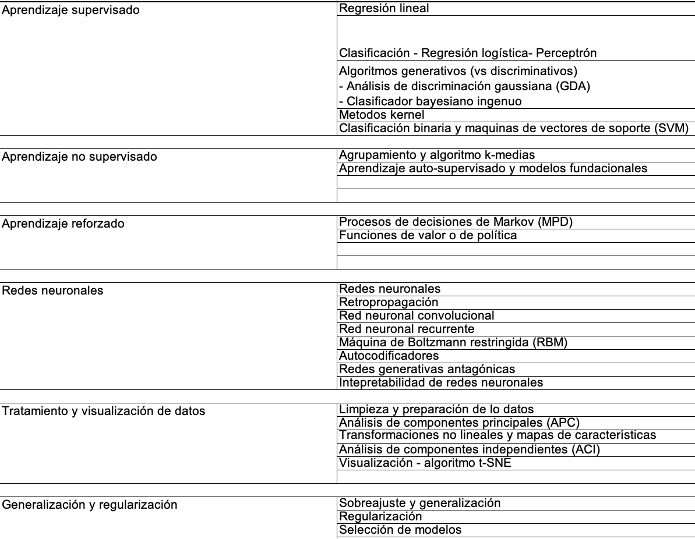

1. Introduction to the course and to Machine Learning#
1.1. About this course#
Este es un curso introductorio al aprendizaje automático (machine learning - ML) pensado para estudiantes de ciencias naturales (por ejemplo astronomia, biología, ecología, estadística, farmacia, física, geología, matemáticas, medicina, meteorología, química) y enfocado al uso de estos nuevos métodos en problemas científicos. El curso introduce conceptos, técnicas y aplicaciones del aprendizaje automático desde una perspectiva de la modelación y la predicción en problemas científicos, cubriendo desde temas básicos como clasificación y regresión lineal hasta enfoques más actuales como redes neuronales y acercamientos al aprendizaje profundo, con aplicaciones a imágenes, series temporales, catálogos, y en general bases de datos de relevancia científica. El curso ofrecerá al estudiante además de las ideas e intuición básica detrás del aprendizaje automático, un entendimiento formal del que le permitirá responder cuándo, cómo y por qué utilizar estos métodos.
1.1.1. Metodología#
La asignatura tiene una orientación teórico-práctica. Se desarrolla preferencialmente usando casos de estudio que permitan dar un contexto aplicado a la introducción de los conceptos fundamentales de ML, orientado a problemas científicos. Estos casos de estudio pueden tocar uno o más temas del contenido de la asignatura. Se usarán intensivamente herramientas computacionales, como notebooks de python en diversas plataformas, además de librerías propias del área, y en casos específicos, hardware gpu. Se espera que el estudiante desarrolle trabajo durante la clase y autónomamente fuera de la misma. La evaluación se enfocará en talleres prácticos y proyectos aplicados. Se invitarán expertos para compartir experiencias y crear y fortalecer lazos de investigación y mentoría.
1.1.2. Conceptos previos#
Para desarrollar exitosamente la asignatura, se espera que el estudiante tenga nociones básicas de:
Programación - Saber representar un problema de forma algorítimica y estar familiarizado con las sintaxis básicas y propias de un lenguaje como python.
Cálculo diferencial - Comprender el uso y aplicación de la derivada y su relación con procedimirntos de optimización, además de una generalización básica a varias dimensiones, sin necesitar un curso de cálculo vectorial.
Álgebra lineal - Comprender los conceptos de multiplicación de matrices, espacios vectoriales, transformaciones lineales.
Adicionalmente, se sugiere, pero no es obligatorio, tener conocimientos básicos de probabilidad y estadística, tales como eventos independientes/dependientes, muestras aleatorias, etc
1.1.3. Contents#
1.1.4. Evaluación#
Módulo I: 40%
Módulo II: 60%
La metodología de evaluación es mixta, usando diferentes recursos que evalúan diferentes aspectos del aprendizaje:
a) Tareas normales que se califican sobre 5.0. Estas puede ser tareas sencillas de un día para otro, o workshops en donde ustedes entregan y además revisan el trabajo de sus compañeros, y la nota final depende de la calidad de lo que entregó y de lo bien que evaluó (se castigan calificaciones demasiado buenas, demasiado malas, etc)
b) Minitareas, que normalmente valen entre 1.0 a 2.0, y se van acumulando hasta convertirse en una tarea completa que puede sumar más de 5.0 (ahí está la ayuda en bonos). Estas muchas veces se hacen en clase y al sumar más de 5.0 permiten que usted no presente alguna y aún así aspire a sacar 5.0. Adicionalmente, pueden consistir de videos de preparación de clase y otras actividades.
c) Proyectos se busca la solución de problemas más complejos , en grupo. Allí se deben fortalecer las habilidades blandas y usar herramientas apropiadas para coordinar el trabajo en grupo. Adicionalmente, la nota final de estos trabajos en grupo depende también de una evaluación anónima que hagan sus propios compañeros sobre su contribución, de manera que si usted no trabaja, no obtendrá la misma nota que los demás aunque estén en el mismo grupo.
1.1.5. Atención de dudas#
Foro en moodle: micampus.unal.edu.co.
Email con la pregunta claramente detallada.
Reservas usando el calendario de google.
Email proponiendo al menos dos horarios de reunión e indicando la pregunta
1.2. Introduction to Machine Learning#
Machine learning is the field of study that gives computers the ability to learn without being explicitly programmed. Arthur Samuel, 1959
Learning:
A computer program is said to learn from experience E with respect to some class of tasks T and performance measure P, if its performance at tasks in T, as measured by P, improves with experience E. Tom Mitchell’s, 1997
Machine learning is a branch of artificial intelligence that allows computers to learn from given information and perform new but similar tasks.
Artificial intelligence: The compuyter performs actions defined as requiring intelligence -> Moving target
Search Based Heuristic Optimization
Evolutionary computation
Logic Programming (inductive logic programming, fuzzy logic)
robabilistic Reasoning Under Uncertainty (bayesian networks)
Computer Vision
Natural Language Processing
Robotics
Machine Learning
1.3. ML Historical development#
1.3.1. Brief history#
Period |
|
|---|---|
Antiguity: Greek myths referencing intelligent robots and artifical begins. |
|
800, talmudic period, medieval times: search for artifical life and devices to answer questions. |
|
1200: Lullian circle to perform logical operations |
|
1495: Leonardo davinci’s Mechanical knight |
|
… |
|
1940: Edward Uhler created the Nimatron |
|
1943: McCulloch and Pitts develop the first artifical neuron |
|
1950: Shannon publishes “Programming a computer to play chess”. Also, Turing test is formulated. |
|
1950: Alan Turing explores the possibility of machines to mimic human behaviour. |
|
1951: Minsky first neural network machine |
|
1955: Logist Theorist, by Allen Newell, J.C. Shaw, and Hertbert Simon at Carnegie Institute of Technology |
|
1956: The Logic Theorist become the first artificial intelligence program ever created. |
|
1956: John McCarthy coined the term “artificial intelligence”. Golden years of AI |
|
1957: Frank Rosenblatt invented the Perceptron (it is non boolean and accepts weights |
|
1959: Herbert Simon, programmer J. C. Shaw, and computer scientist Allen Newell create the General Problem Solver based on logic machine architecture |
|
1963: John McCarthy, MIT Artificial Intelligence Lab; McCarthy and Marvin Minskey launched SAIL: Stanford Artificial Intelligence Laboratory |
|
1963: Foundation of kernel methods. Aizerman, Braverman, and Rozonoer |
|
1965: Joseph Weizenbaum created the computer program Eliza |
|
1966: Ross Qullian showed semantic networks to represent human knowledge |
|
1967: The Nearest Neighbor Rule, Cover and Hart introduced the k-nearest neighbor algorithm |
|
1968: Alexey Ivakhnenko, a Ukrainian scientist, introduced the Group Method of Data Handling (GMDH) |
|
1969: Marvin Minsky and Seymour Papert presented limitations of perceptrons and the Rosenblatt’s perceptron learning theorem. |
|
1970: Predictions on near human like artifical intelligence were overconfident. First AI Winter until 1980 |
|
1973-74-75: SOme algorithms are developed, like IAD, CART and ID3 |
|
1980: Golden era for AI starts. First internationl conference. Edward Feigenbaum developed a computer that makes decisions as a human can |
|
1980: Kunihiko Fukushima published his work on the neocognitron, a deep convolutional neural network |
|
1985: NetTalk, pronounced words as a baby |
|
1986: Back propagation algorithm,David Rumelhart, Geoffrey Hinton, and Ronald Williams |
|
1986: Carnegie Mellon University engineers built Navlab, the first autonomous car. |
|
1986: Linear predictive programming, speech recocnition |
|
1987: Computer scientist Natarajan Shankar used the Nqthm theorem-prover to prove Gödel’s first incompleteness theorem. |
|
1989: Richard S. Sutton published a paper that helped to better formalize the ideas of reinforcement learning. |
|
1995: Support Vector Machines (SVM), Vladimir Vapnik and Cortes developed the Support Vector Machine (SVM) method for linear classification |
|
1966: Ensemble methods, Bagging. Aggrgation of multiple decision trees results |
|
… |
|
2001: Bagging and Random Forests |
|
2005: Classical ML era, statistical learning: linear regression, clustering, etc. Recommendation era. Netflix price |
|
2009: “Eureka machine” by Cornell scientists generated Newton’s three laws of motion in a few hours |
|
2009: Image net database |
|
2010: Microsoft kinect, computer vision in the market |
|
2010: Deep learning era. Neural networks, convolutional models, and GPU use |
|
2011: IBM’s Watson defeated Jeopardy! champions Brad Rutter and Ken Jennings |
|
2014: Generative Adversarial Networks (GANs) |
|
2015: Large scale era. |
|
2015: Google DeepMind’s AlphaGo beat 3 time European Go champion 2 Fan Hui. |
|
2017: Attentions is all you need, google. Transformers as origin of LLM |
|
2018: The AI Now Report 2018 by the AI Now Institute revealed unsafe and poor practices by IBM Watson, the U.S. Immigration and Customs Enforcement, the Xinjiang Autonomous Region, and Amazon’s Recongnition tool |
|
2019: oogle’s AlphaStar defeated pro StarCraft II players. Visual processing |
|
2022: ChatGPT and the boom of LLM. |
|
2023…: Generative AI, Sora (video creation) , stable difussion (image creation) , midjourney, … |
|


{kind=link}